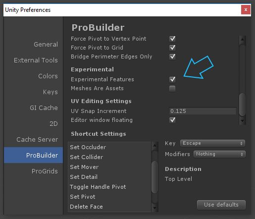
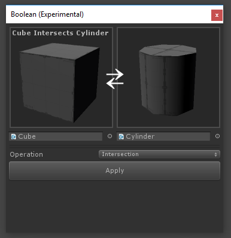
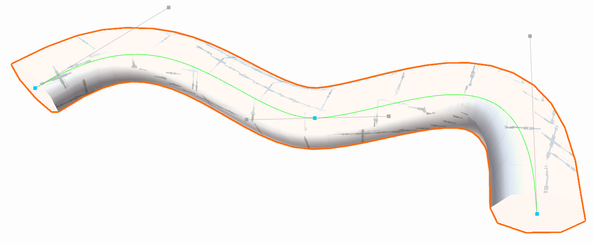
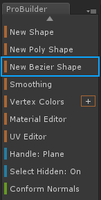
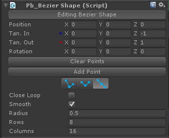

Overview
ProBuilder has some additional features that are considered experimental. These are features that are either close to being complete, or complete with some caveats.
By default Experimental Features are disabled. To enable experimental features:
- Open Unity Preferences (
Edit / Preferenceson Windows,Unity / PreferencesMac) - Under the Experimental header, enable Experimental Features

Boolean (CSG) Tool

The Boolean Tool provides an interface for creating new meshes from boolean operations.
Each function (Union, Subtract, Intersect) accepts 2 gameObjects: the left and right side. A new mesh is created.
Bezier Shape
Section Video: Creating and Editing Bezier Shapes

Quick Start

- In the ProBuilder Toolbar select New Bezier Shape.
- Move control & tangent points by dragging.
- For precise controls, click a control point to select it (selected control points have a tranlate and rotation handle).
- To add a point click on the bezier path line.
- To remove a point, select it and press
Backspace(Deleteon Mac). - To finish editing, click the "Editing Bezier Shape" button.
- To re-enter editing, click the "Edit Bezier Shape" button.
Important!
Modifying bezier control points or settings will clear any mesh edits.
Modifying bezier control points or settings will clear any mesh edits.
Bezier Shape Inspector

| Inspector | Description |
|---|---|
| Edit Bezier Shape | Toggle in and out of shape editing mode. |
| Position | The local position of the selected control point. |
| Tan. In | The local position of the selected control tangent in handle. |
| Tan. Out | The local position of the selected control tangent out handle. |
| Rotation | An additional rotation to be applied to the vertices of the extruded tube. |
| Tangent Mode | Allows you to modify how interacting with tangent handles works. |
| Clear Points | Clear all control points on this mesh. |
| Add Point | Add a new control point at the end of the bezier path. |
| CloseLoop | Should the extruded path loop back around to the start point. |
| Smooth | Determines if the extruded pipe faces have hard or soft normals. |
| Radius | The radius of the extruded pipe. |
| Rows | How many segments to insert between control points when extruding the pipe. |
| Columns | How many vertices make up the ring around the radius of the pipe. |
Tangent Modes
| Icon | Tangent Mode | Description |
|---|---|---|
 |
Free | Adjusting one tangent does not affect the other. |
 |
Aligned | Adjusting a tangent will set the other tangent to match it's magnitude. |
 |
Mirrored | Tangent handles are locked in a straight line. |